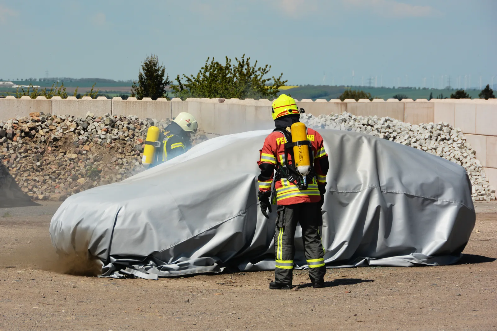
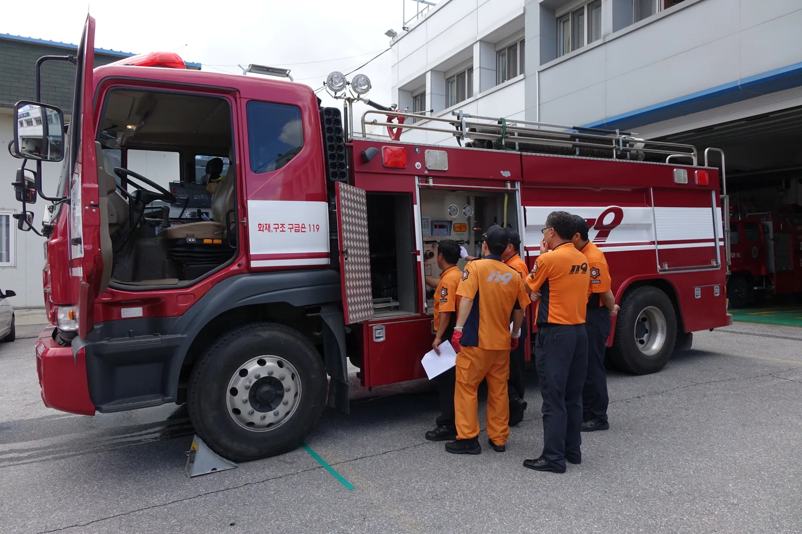
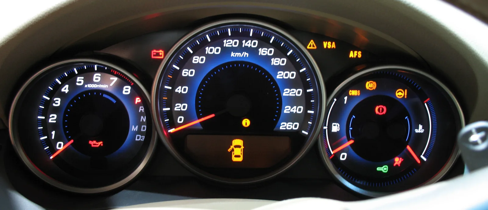
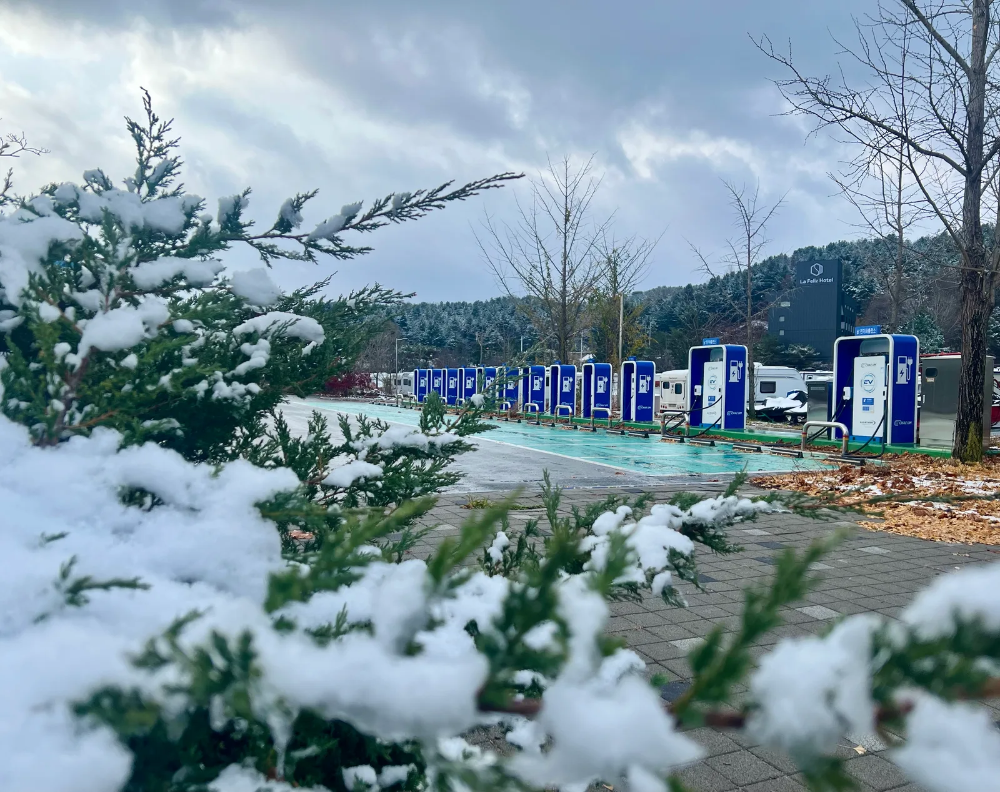

▲ 질식소화포로 산소를 차단해 화재 확산을 억제하는 훈련 장면 ⓒ Anja Engel (Wikimedia Commons, CC BY-SA 4.0)
전기차에서 연기가 난다면, 가장 먼저 해야 할 일은 소화기를 찾는 게 아니다. 차를 세우고 그 자리를 벗어나는 것이다.
내연기관차 화재와 달리 전기차 화재는 일반 분말소화기로 잘 꺼지지 않는다. 리튬이온 배터리 내부에서 진행되는 열폭주(thermal runaway) 때문이다. 소방청조차 "전 세계적으로 리튬배터리 화재에 완전히 적응성 있는 소화기는 없다"고 밝힌 바 있다.
그렇다면 소방당국은 실제로 어떻게 진압하고, 운전자는 화재 발생 시 무엇을 해야 할까. 소방청·국립소방연구원 자료를 바탕으로 2026년 기준으로 정리했다.
1. 왜 일반 소화기로는 안 꺼지나 — 열폭주라는 변수
내연기관차 화재는 연료나 엔진 오일에 붙은 불을 산소 차단·냉각으로 잡으면 대체로 진압된다. 전기차는 다르다. 불이 배터리 팩 내부의 밀폐된 셀 안에서 시작되기 때문이다.
| 구분 | 내연기관차 화재 | 전기차 화재 |
|---|---|---|
| 발화 위치 | 연료·오일 등 외부 노출 부위 | 배터리 팩 내부 셀 — 접근·냉각이 어려움 |
| 진압 원리 | 산소 차단 또는 표면 냉각으로 대부분 진압 | 내부 온도를 낮추지 못하면 재발화 반복 |
| 평균 진압 시간 | 대략 20분 내외 | 사례에 따라 1시간 이상 소요 |
| 재발화 위험 | 낮음 | 진압 후에도 수 시간~수일 뒤 재발화 가능 |
열폭주는 배터리 셀 하나에서 시작된 이상 발열이 옆 셀로 연쇄적으로 옮겨붙는 현상이다. 한 번 시작되면 배터리를 모두 태울 때까지 화재가 이어지는 경우가 많다. 일반 분말소화기나 이산화탄소 소화기는 겉불을 잠깐 잡을 수는 있어도, 배터리 내부의 열원을 식히지 못해 시야만 가리고 오히려 재발화를 부를 수 있다는 지적이 나온다.
📍 "완전 적응성 있는 소화기는 없다"
소방청은 시판 중인 이른바 '리튬배터리 전용 소화기'로도 전기차 화재를 완전히 진압하기는 어렵다는 입장이다. 소화 원리 자체가 배터리 내부 발열을 근본적으로 막지는 못하기 때문이다. 실제 한 사례에서는 일반 화재가 20분 만에 꺼진 것과 달리, 전기차 화재는 진압에 1시간 넘게 걸린 것으로 보도됐다.
2. 소방당국 실제 진압 방식 — 질식소화포·이동식 수조
소방당국이 실제 현장에서 쓰는 방법은 크게 두 가지다. 산소를 차단하는 질식소화포와, 차량을 물에 담가 식히는 이동식 수조다.
| 장비 | 작동 원리 | 한계 |
|---|---|---|
| 질식소화포 | 내열 소재로 차량 전체를 덮어 산소 공급을 차단하고 화염·유해가스 확산 억제 | 배터리 내부 열원 자체를 없애지는 못해 보조 수단에 가까움 |
| 이동식 수조 | 차량을 물이 담긴 수조에 침수시켜 배터리 열을 냉각, 재발화 차단 | 크레인 등으로 차량을 끌어 옮겨야 해 설치·운용에 시간과 공간이 필요 |

▲ 전기차 화재 현장에는 일반 화재보다 많은 물과 장비, 시간이 필요하다 ⓒ Kwangmo (Wikimedia Commons, CC0)
📍 이동식 수조, 만능은 아니다
소방청은 이동식 수조에 대해 "생각보다 현장에서 쓰기 힘들다"는 입장을 밝힌 바 있다. 지하주차장처럼 진입로가 좁거나 차량 주변에 다른 차가 밀집한 경우, 수조까지 차량을 옮기는 것 자체가 쉽지 않기 때문이다. 그래서 실제 현장에서는 대량의 물을 지속적으로 살수해 배터리를 냉각시키는 방식이 여전히 기본이 된다.
이런 한계 때문에 소방청 국립소방연구원은 현대자동차·한국자동차공학회와 함께 지하주차장 전기차 화재 특성을 분석하고 조기 감지·제어 기술을 개발하는 산학관 공동 연구를 2024년부터 2027년까지 진행 중이다. 2026년 8월에는 두 가지 신기술을 공개했다. 하나는 AI 영상인식 기반 화재 조기감지 기술로, 배터리 열폭주 초기 단계에 나오는 옅은 연기를 CCTV 영상으로 포착해 감지 시간을 65% 단축하고 오경보율을 80% 낮췄다. 다른 하나는 배터리 용량이 커진 최신 전기차의 대규모·장시간 화재에 대비한 '안전연소' 기법이다. 초기 진압이 어려운 극한 상황에서 억지로 불을 끄려 하기보다, 열 저항·인열 강도를 높인 전용 덮개로 차량을 덮고 외부에 지속적으로 물을 뿌려 인접 차량으로의 불길 전이를 차단하면서 안전하게 다 태우는 방식이다.
3. 운전자 행동요령 — 진압보다 대피가 먼저다
운전자가 전기차 화재를 직접 진압하려 해서는 안 된다. 배터리 화재는 전문 장비와 대량의 물이 필요한 작업이고, 감전·고전압 위험까지 있다. 소방청 매뉴얼이 강조하는 원칙은 단순하다 — 대피 우선.
✅ 주행 중 이상 징후를 느꼈을 때
· 즉시 갓길 등 안전한 장소에 정차 — 터널·지하주차장·다른 차량 밀집 구간은 최대한 피할 것
· 시동을 끄고 비상등을 켠 뒤 신속히 하차, 안전거리 이상 벗어나기
· 직접 불을 끄려 하지 말고 즉시 119 신고
· 다른 차량·보행자에게도 대피를 알릴 것 — 재발화·폭발성 가스 분출 위험이 있음
📍 주차 중·충전 중이라면
지하주차장이나 집 안 충전 중 이상 징후(냄새, 소음, 경고등)를 발견했다면 차량에서 즉시 떨어져 대피하고 주변 사람들에게도 알려야 한다. 국내 전기차 화재의 44.6%가 주차 중(25.9%)이나 충전 중(18.7%) 발생한 것으로 나타나는데, 이는 화재 초기 대응이 어려운 상황일 가능성이 높다는 뜻이기도 하다.
일반건축물 전기차 화재 대응 매뉴얼과 국립소방연구원의 대응 가이드는 국토교통부·소방청 사이트에서 확인할 수 있다. 전기자동차 사고대응 매뉴얼 보기
4. 화재 징후, 조기에 알아차리는 법
전기차 화재는 대부분 전조 없이 갑자기 폭발하듯 시작되지 않는다. 초기에는 감지할 수 있는 신호가 먼저 나타나는 경우가 많다.
✅ 조기에 알아챌 수 있는 신호
· 계기판 배터리 경고등이 켜지거나 평소와 다른 경고 메시지가 뜸
· 차량 안이나 주변에서 평소와 다른 단내·화학약품 냄새가 남
· 충전 중 이상 소음이나 배터리 팩 부위가 부풀어 오르는 현상
· 충전 케이블·커넥터가 과도하게 뜨거워짐

▲ 배터리 경고등이나 낯선 경고 메시지가 뜨면 운행을 멈추고 점검을 받아야 한다 ⓒ Wikimedia Commons (Public Domain)
이런 신호를 발견하면 운행을 즉시 중단하고 제조사 서비스센터나 정비소에 연락해야 한다. 정부도 이런 조기 대응을 돕기 위해 2025년 4월부터 제조·수입사와 협업해 배터리 이상 감지 시 자동으로 화재 신고가 이뤄지는 시범사업을 시행 중이다.
5. 최근 사례와 정부 대응 — 2026년 기준
2026년에도 전기차 화재 사고는 계속 보도되고 있다. 3월 30일 밤 충남 보령시 한 도로에서는 빗길에 미끄러진 전기차가 앞서가던 승용차·전신주 등과 잇달아 충돌한 뒤 화재로 번져 운전자가 심한 화상을 입고 병원으로 옮겨졌다가 끝내 숨졌다. 소방당국은 사고 직후 약 35분 만에 불길을 잡았다.
이 사고는 재발화 위험을 보여준 사례이기도 하다. 사고 차량은 진화 후 인근 공업사 폐차장으로 옮겨졌는데, 11일 뒤인 4월 10일 같은 차량에서 다시 불이 났다. 소방당국은 사고 충격으로 손상된 배터리팩 내부에서 재차 발열이 진행되다 뒤늦게 불이 붙은 것으로 보고 있다. 이때는 다행히 인명 피해 없이 10여 분 만에 진화됐지만, 배터리 손상 차량은 겉으로 불씨가 없어 보여도 며칠 뒤 재발화할 수 있다는 점을 보여준 사례로 꼽힌다.
| 시기 | 내용 |
|---|---|
| 2025.02 | 신축 건물 지하주차장 습식 스프링클러·소화·경보설비 설치 의무화 대책 발표 |
| 2025.04 | 국토부·제조사 협업 배터리 이상 감지 화재신고 시범사업 시행 |
| 2026.03 | 지하주차장 스프링클러 설치 기준 강화(주차면당 헤드 2개 이상) 적용 |
| 2026.08 | 소방청, AI 영상인식 조기감지 기술 및 신개념 안전연소 기술 공개 |

▲ 국내 전기차 화재의 상당수는 충전 중이거나 주차 중에 발생한다 ⓒ Sharon Hahn Darlin (Wikimedia Commons, CC BY 2.0)
📍 기존 건물은 어떻게 되나
신축 건물은 스프링클러 등 설비가 의무화됐지만, 기존 건물은 당장 소급 적용되지 않는다. 소방당국은 불시점검과 화재안전컨설팅을 통해 건물 관리자가 장기수선계획 등을 세울 때 개선된 소방시설을 도입하도록 유도하는 방식을 병행하고 있다.
일부 아파트 단지는 자체적으로 질식소화포·이동식 수조를 갖춰야 하는지를 두고 논의 중이다. 다만 이런 장비는 전문 소방인력의 운용이 전제된 보조 장비인 만큼, 일반 주민이 직접 다루는 용도는 아니라는 점을 함께 짚어둘 필요가 있다.
6. 요약
전기차 화재는 배터리 셀 내부에서 진행되는 열폭주 때문에 일반 분말소화기로는 진압이 어렵다. 소방당국도 "완전히 적응성 있는 소화기는 없다"고 밝힌다. 실제 현장에서는 질식소화포로 산소를 차단하거나 이동식 수조·대량 살수로 배터리를 냉각시키는 방식이 쓰인다.
운전자가 해야 할 일은 진압이 아니라 대피다. 배터리 경고등, 단내·화학약품 냄새, 충전 중 이상 소음 같은 조기 징후를 발견하면 즉시 안전한 곳에 정차한 뒤 대피하고 119에 신고해야 한다. 국내 전기차 화재의 44.6%가 주차·충전 중 발생한다는 점에서, 평소 이런 신호에 민감해지는 것이 최선의 예방책이다.
정부는 신축 건물 지하주차장 소화·경보설비 의무화, 배터리 이상 감지 자동신고 시범사업, AI 기반 화재 조기감지 기술 등으로 대응 체계를 넓혀가고 있다.